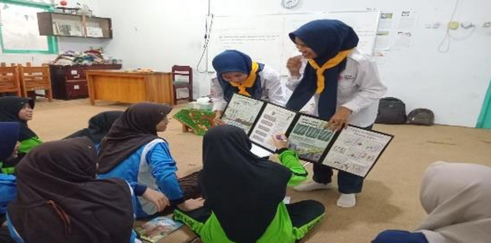

TEGAL — Menanamkan jiwa kemanusiaan, kesiapsiagaan bencana, dan karakter kepemimpinan harus dimulai sejak dini. Menyadari pentingnya regenerasi relawan yang tangguh, PMR Wira SMKN 1 Adiwerna sukses menyelenggarakan program Bina Madya 2025. Kegiatan ini dikemas sebagai wadah monitoring, evaluasi, sekaligus pembinaan bagi unit Palang Merah Remaja (PMR) tingkat Madya di wilayah Kabupaten Tegal.
Perjalanan pembinaan tahun ini menyisir beberapa sekolah mitra yang dikenal memiliki basis relawan muda yang aktif, solid, dan penuh semangat. Melalui metode kunjungan langsung (roadshow), tim fasilitator dari SMKN 1 Adiwerna menyambangi dan berbagi ilmu di empat pos kemanusiaan: MTsN 5 Tegal, SMPN 3 Adiwerna, SMPN 1 Dukuhturi, dan SMPN 4 Adiwerna.
Pos 1: Edukasi Kebencanaan Gempa Bumi di MTSN 5 Tegal
Kunjungan pertama diawali di MTsN 5 Tegal. Sejak pagi, aura kedisiplinan dan kesiapan sudah terasa di lingkungan madrasah ini. Pada pos pertama ini, kakak-kakak PMR Wira SMKN 1 Adiwerna hadir untuk memberikan materi krusial mengenai kesiapsiagaan bencana, khususnya gempa bumi..

Pos 3: Ketangkasan Tanpa Batas di SMPN 1 Dukuhturi
Pos ketiga membawa tim Bina Madya SMKN 1 Adiwerna ke SMPN 1 Dukuhturi. Di sekolah ini, fokus beralih pada uji keterampilan teknis kepalanganmerahan. Tanpa canggung, para siswa langsung mempraktikkan simulasi pertolongan pertama (PP) dan pembuatan tandu darurat secara cepat dan tepat di bawah pengawasan kakak-kakak PMR Wira SMKN 1 Adiwerna.. Ketangkasan, ketenangan, serta kerja sama tim yang ditunjukkan oleh PMR SMPN 1 Dukuhturi membuktikan bahwa latihan rutin yang mereka jalani selama ini berhasil mencetak relawan muda yang sigap dalam situasi darurat
Pos 4: solidaritas Hangat di SMPN 4 adiwerna
Rangkaian kunjungan pembinaan akhirnya ditutup dengan manis di SMPN 4 Adiwerna. Suasana keakraban begitu kental terasa di pos terakhir ini. Tim pembina dari SMKN 1 Adiwerna melakukan evaluasi menyeluruh sekaligus memberikan suntikan motivasi agar para anggota PMR tidak jenuh dalam berproses dan terus aktif berkegiatan. Acara ditutup dengan yel-yel khas PMR SMPN 4 Adiwerna yang bergemuruh penuh energi, menyalurkan semangat solidaritas tinggi yang menjadi nilai utama dari gerakan Palang Merah.